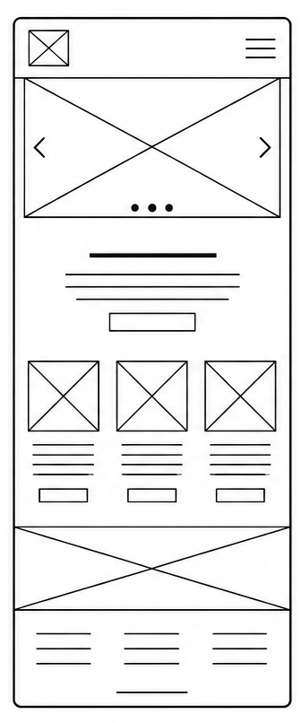
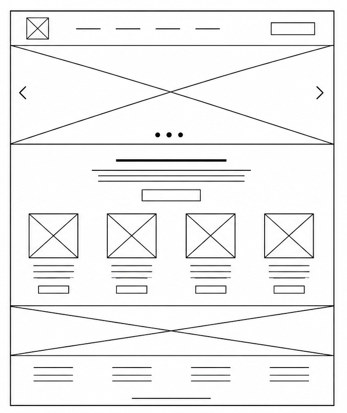

1. Site Name
Selected Name: EcoTrails (EcoTrails Cochabamba)
Proposed Domain: ecotrails-tiraque.org
Reason for Selection: The name seamlessly combines "Eco" (highlighting our core focus on environmental conservation and sustainable eco-tourism) with "Trails" (representing hiking paths). This instantly defines the club's main activities for the user. A .org domain was chosen because it properly represents a local, non-profit community club dedicated to promoting tourism in the beautiful municipality of Tiraque.
2. Site Purpose
The primary purpose of EcoTrails is to act as the official digital hub for eco-tourism, local exploration, and hiking activities in Tiraque, Cochabamba. The website will provide key services and information by:
- Publishing interactive, detailed directories of local hiking trails.
- Displaying real-time climate safety alerts and weather conditions integrated from a remote API.
- Providing a dynamic gear checklist powered by local JSON data to recommend essential equipment.
- Offering a highly accessible online registration form for new community members to join group hikes.
3. Scenarios (Target Audience Questions)
The following scenario questions represent the core needs of our target audience and drive our content design:
- Scenario 1: "Which hiking trails in Tiraque are safe to explore today given the current real-time weather and environmental safety alerts?"
- Scenario 2: "I want to sign up for an upcoming group trek with the club; what mandatory gear should I prepare if I select a high-difficulty mountain route?"
4. Color Scheme & Document Application
The selected palette is directly inspired by the natural mountain scenery, green valleys, and clay soil of Tiraque. These specific colors are actively used across this entire site plan document to establish branding consistency and meet strict WCAG contrast accessibility requirements:
Deep Forest Green
Hex: #2E5A44
Used for: Document main headings (H1, H2) and section structures.
Terracotta Orange
Hex: #D97736
Used for: Subtitles, list icons, borders, and visual highlights.
Eco Light Gray
Hex: #F4F7F5
Used for: Site-wide structural layout background color.
Dark Charcoal
Hex: #222222
Used for: High-contrast body paragraphs and list content text.
5. Typography and Font Application
To enhance reading accessibility, two primary web-safe font stacks have been defined. They are fully rendered and applied live throughout this planning document:
-
Trebuchet MS Font Stack (Fallback: Arial, sans-serif)
Application: This clean, structured geometric font is applied strictly to all main headings (H1, H2, and titles) to provide immediate visual hierarchy and strong branding identity. -
Segoe UI Font Stack (Fallback: Tahoma, Verdana, sans-serif)
Application: This highly legible interface font is applied to all body text, lists, and scenarios. It ensures optimal reading comfort on digital screens of any viewport size.
6. Home Page Wireframe Layout
Student Submission Note: In accordance with course guidelines prohibiting AI-generated layouts, the structural black-and-white layout sketches for the Home Page (covering both small mobile screens and large desktop viewports) have been drafted manually. Once finalized, the scanned sketch image will be linked below.
Mobile Viewport Layout

Desktop/Tablet Viewport Layout
